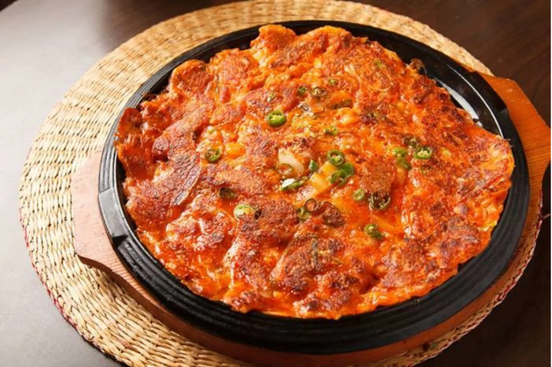

Kimchi Pancake

Description
Kimchi pancake or Kimchi-buchimgae is a staple in Korean culture. It mainly consists of kimchi and flour batter but various other ingredients can be added. It is typically served as an appetiser or snack.
Ingredients
- 1/2 pound of chopping kimchi
- 3 scallions, chopped
- 1/2 teaspoon sugar
- 1/2 cup all-purpose flour
- 1/2 water
- 4 tablespoons vegetable oil
Steps
- Combine the kimchi, kimchi brine, scallions, sugar, flour, and water in a medium bowl and mix well with a spoon.
- Heat a 12-inch nonstick skillet over medium heat.
- Add 2 tablespoons of the vegetable oil and swirl to coat the bottom of the pan.
- Pour the batter into the pan and spread it with the back of a spoon or a spatula to make a large circle
- Cook until the bottom is golden brown and crips, 3 to 5 minutes
- Carefully turn the pancake over. Drizzle the remaining 2 tablespoons oil around the edges of the skillet, then lift the pancake with a thin spatula to allow the oil to run underneath and tilt the pan to spread it evenly
- Cook until the bottom of the pancake is ight golden brown and crisp, 3 to 5 minutes.
- Flip it one more time and cook for another minute.
- Slide onto a large serving platter and serve immediately.